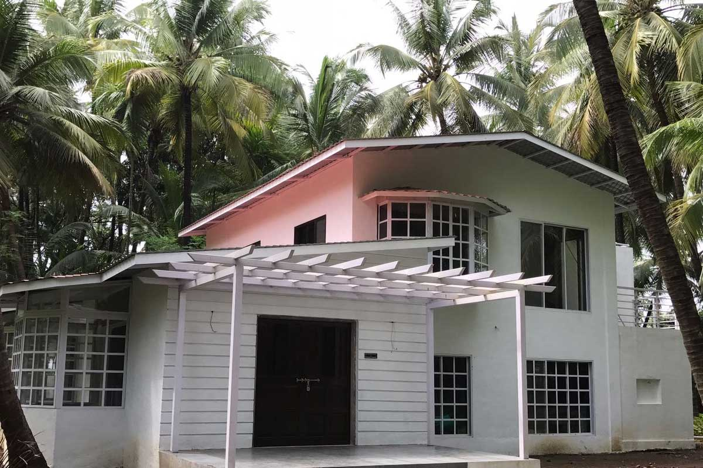

Building Planning
Purposeful layouts and planning support that balance practical needs, site context and design intent.
Architecture, building planning and development consultancy rooted in an understanding of place, people and possibility.

Every project begins with understanding its purpose, setting and possibilities. Mudra Architectural Consultants brings planning knowledge and design thinking together to help clients move forward with confidence.
From building planning to regulatory proposals and landscape or interior considerations, our approach is grounded in clarity, functionality and attention to detail.
Discover Mudra ↗Support across key stages of planning and design, tailored to the needs of your site and project.
Purposeful layouts and planning support that balance practical needs, site context and design intent.
Guidance for non-agricultural land-use proposal requirements and associated planning processes.
Planning-oriented support for projects where coastal regulation considerations are relevant.
Outdoor spaces that respond to the setting and connect architecture with its surroundings.
Interior planning focused on usability, material character and a coherent overall experience.
Clear communication and considered support to help clients understand the next steps.
A glimpse of project imagery and portfolio categories preserved from the supplied website files.
We start with your brief, site context, priorities and goals.
We explore practical possibilities and planning requirements.
We align design considerations with the needs of the project.
We help clarify deliverables and the next steps for your project.
Talk to Mudra about your next architectural or planning project.